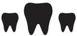

Bana kimse bunların dişi çıkacak dememişti!
Hayır, ben hayatımdaki bütün insanların ağzında dişi olduğunu görünce, bunun başıma geleceğini tahmin etmiştim de durumun bu kadar ciddi olabileceğini düşünmemiştim. Bir gün bu bebeklerin de dişi çıkabilir demiştim kendi kendime ama mevzunun bu kadar kritik olduğunu tahmin edememiştim. Bebekler için diş çıkartmak Çin işkencesi gibi bir şey. Deli oluyorlar buna, depresyona giriyorlar. O sevimli ve ota naneye gülücük atan bebek bir anda ağzından sular akan, elini ağzından çekmeyen, sinirli, ateşli, uykusuz ve poposundan sıvı kaka akıtan bir yaratığa dönüşüyor. Tüm bunların altında yatan tek bir şey var: küçük, beyaz bir diş.
Bazen çıkması zaman alıyor. Bazen sancıları çok erken başlıyor. Bazen hiç fark ettirmeden çıkıyor. Hangisini yaşayacağını zaman gösterir.
Bu diş çıkartma işinde öğrendiğim birkaç bir şey var.
1- Çıkmazsa panik olma: Name’nin dişleri çok geç çıktı. İlk dişinin çıkmasını aylarca bekledim. Bir gün anneannem ile telefonda konuşurken, Name’nin daha dişi çıkmadı, dedim üzülerek. Bak bakalım etrafında dişi çıkmamış insan görebilecek misin? dedi. Hakikaten göremedim.
2- Bir kere çok kaşınıyor dişleri. Haklılar. O yüzden sık sık ellerini ağızlarına götürüyorlar. Ya da ellerine ne geçerse onu sokuyorlar ağızlarına. Bebeğin diş çıkartırken ishal olmasının sebebi dişin çıkması değilmiş aslında, dişini kaşımak için ağzına aldığı şeylerden bulaşan mikrop dolayısıyla ishal oluyormuş. Bebeğin ağzını kaşıyacağı objeleri sen belirle. Ve onları temiz tut.
3- Ara sıra kaşıma işini sen üstlen. Diş çıkartırken ağrıyı hafifletecek jeller var. Bir de parmağa takılan diş kaşıma aparatları. Bebeği kucağına al ve dişlerini kaşı. Nasıl mest olduğunu tahmin edemezsin.
4- Sürme kisti denilen bir şey var. Mete’nin bir dişi aylarca çıkamadı. Sonunda dişinin çıkacağı yerde bir kist oluştu. Simsiyah bir çürük vardı diş etinde. Doktora gittik. Kendi doktorumuz yokmuş, başka bir çocuk doktoru gördü. Beni dehşete düşüren bir şey söyledi. Parmağını rakıya batır ve bebeğin ağzına rakı sür! Yanlış mı duydum acaba diye bir daha sordum. Sahiden öyle dedi. Eh tamam biz de biliyoruz diş ağrısına rakı ile gargara falan iyi gelir ama mevzu bahis 10 aylık çocuk olunca insan bir durup düşünüyor. Durdum düşündüm ve yapmadım. Diş hekimine götürdüm, bekleyeceğiz çıksın diye, yapacak bir şey yok dediler. Bekledik. Ve sonunda bir gün o diş, üzerindeki diş etini parçalayıp kanatarak çıktı.
5- Ona bir güzellik yap. Soğuk iyi geliyor. Temiz ağız bezlerini veya diş kaşıyacağını buzdolabında bekletip diş etine sürebilirsin.
6- Ağzının suyu dehşet akar. Önlük tak ya da yakasına bez koy. Koymazsan kıyafetinin ön kısmı ıslanır. Hem de göğsünü üşütecek kadar.
Diş çıkaran çocuk keyifsiz, iştahsız, neşesizdir. En son diş ağrısı çektiğin günü hatırla. Ne kadar iştahlı, ne kadar keyifli ve ne kadar neşeliydin bir düşün. Adamın ağzının içinde onu dürtükleyen bir şey var, deli ediyor ama çıkmıyor. Tam kaşımak için elini ağzına götürüyor, annesi çek elini ağzından diyor. Ağzının suyu akıyor, çenesi hep ıslak. Islaklıktan rahatsız oluyor ama silin ağzımı diyemiyor. Bir de üstüne ishal, ateş. Amaaaannn. Delirmediğine şükret ve ilişme.